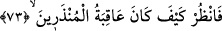
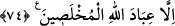

73. Uyarılanların âkıbetinin ne olduğuna bir bak!
“Uyarılanların” uyarılara iltifat etmeyip duyarsız olan bu insanların “âkıbetinin ne
olduğuna” yani korkunç akıbetlerine, helak edilişlerine “bir bak!” Burada hitap ya
doğrudan Rasûlullah (s.a.)’e yahut onların eserlerini müşâhede etmeye ve haberlerini
dinlemeye imkan bulan herkesedir. Mânâ, onlar korkunç ve feci şekilde helak edildiler,
demek olunca, Allah Teâlâ bir sonraki âyette muhlas kulları bu helakten istisna etmiş ve
şöyle buyurmuştur:
74. Allah’ın ihlâslı kulları müstesna.
“Allah’ın” kendilerini iman etmeye ve yapılan uyarının gereğini yerine getirmeye
muvaffak kıldığı “ihlâslı kulları müstesna.” Bunlar, geçmiş kâfir milletlerin helak
olduğu durumlardan kurtulmuşlardır.
Âyet, Peygamberimiz (s.a.)’e teselli mahiyetindedir. Şöyle ki, Allah Teâlâ Rasûlullah
(s.a.)’den önce geçmiş ümmetlere peygamberler göndermiş ve bu peygamberler
ümmetlerini küfür, inkar ve sapıklığın kötü akıbetinden uyarıp korkutmuştur. Ancak
onlar peygamberleri yalanlamış, uyarılara aldırış etmemiş, küfür, inkar ve sapıklıkta
ısrar etmişler ve hatta onlara eza ve eziyet etmişlerdir. Buna rağmen Peygamberler
onların bu eza ve cefalarına sabretmiş, tebliğ ve Allah’a dâvetlerine devam etmişlerdir.
Ey Muhammed (s.a.) sen de onlara uy! Senin görev ve sorumluluğun yalnız dâvet ve
tebliğdir. Sonra küfür, inkar ve sapıklıkta ısrar etmenin sonu helak ve hüsran;
sabretmenin sonu ise kurtuluş ve zaferdir. Öyleyse akıllı kişi ihlas ve samimiyetle
amelini düzeltmeli, gönlünü bozuk ve kötü düşüncelerden arındırarak temizlemelidir
(tasfiye).
Vâsitî der ki: Kulluk (ubûdiyet) şu altı şey etrafında döner: Bunlar sırasıyla şunlardır:
(1) Ta’zim, (2) haya, (3) havf (korku), (4) recâ (umut), (5) muhabbet ve (6) heybettir.
Buna göre ta’zim ve hürmeti hatırlayıp gereğini yapan kimsede ihlas ve samimiyet
canlanır. Hayalı olan kimse her türlü fitne, fesat, vesvese ve tehlikelerden korunur. Havf
sahibi olan kimse günahlardan tövbe eder ve tehlikelerden emin olur. Recâ sahibi olan
taat ve hayırlara koşar. Muhabbet ehli olan saf, temiz ve halis ameller yapar. Allah
Teâlâ’nn heybet ve azametini düşünen mülkiyet ve tercihi bırakıp tüm istek ve
iradesinde Allah Teâlâ’nın iradesine tâbi olur. Allah Teâlâ’nın emirleri karşısında
“İşittik ve itaat ettik,” der.
Sahih haberde vârid olduğuna göre Zülkarneyn (a.s.) karanlık bir vâdi yahut tünelden
geçerken askerlerine “Burada herkes atının ayağına temas eden şeyi alsın, zira bunlar